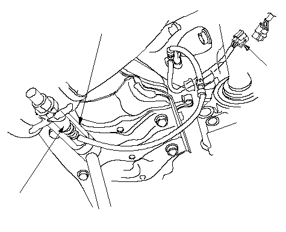

A/F Sensor Replacement
Special Tools Required
O2 sensor wrench
07LAA-PT50101
Disconnect the A/F sensor 4P connector (A), then remove the A/F sensor (B).
Install the A/F sensor in the reverse order of removal.
